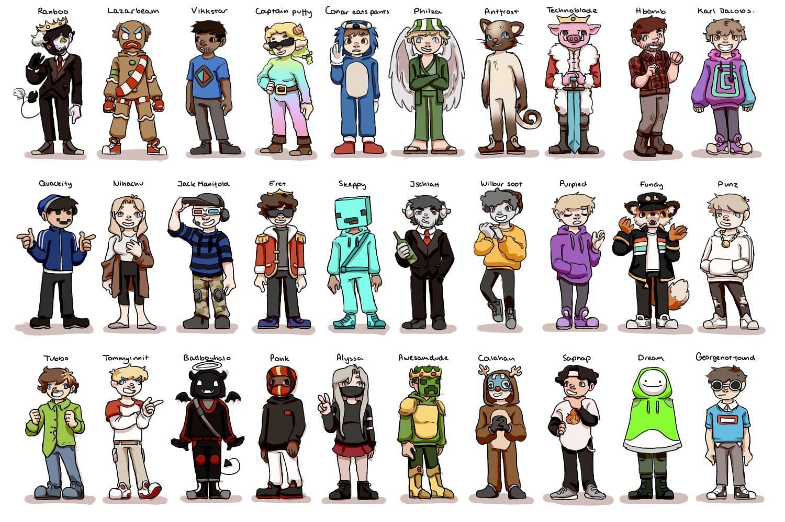

Dream SMP Fandom
| Dream SMP | |
|---|---|
|

Artistic representation of all players/characters portrayed on the DreamSMP Minecraft server.
| |
| Creators | Dream and GeorgeNotFound |
| Videogame | Minecraft |
| Start | April 24, 2020, 3 years ago |
| End | April 10, 2023; 11 months ago |
The Dream SMP (Survival Multiplayer) was a private Minecraft multiplayer server created by Minecraft content creators Dream and GeorgeNotFound. Created as a simple way to play the vanilla version of Minecraft, it soon morphed into a roleplay server, where dozens of different players and content creators played fictionalized versions of themselves in a loosely structured storyline. Their stories revolved around a series of conflicts between rival factions and players, battling for control of land and different magical items. Over time, players created niches for themselves, spawning a host of protagonists and antagonists, each with their unique personalities and backstories. Due to a lack of a set storyline, much of the drama in the series came from improvisation and the genuine personalities of the players, lending the series a sense of authenticity. In addition, the server's unique approach to storytelling—where viewers could switch between different streamers' perspectives to get various angles of the unfolding drama—revolutionized how stories could be told in the gaming space. This method allowed the audience to become, in a sense, directors of their own viewing experience, piecing together the narrative from multiple viewpoints. Being a private server, each member was handpicked by Dream to play a role in the server's story, creating a tight-knit community of players that complimented each other's personalities. Due to Minecraft's young player base, the Dream SMP quickly drew in a large number of fans across the internet, becoming a worldwide phenomenon, and launching many smaller creators to big-time successes. Soon after the rise in popularity, fanfiction and fanart of Dream SMP characters began to spread across the internet, and the server became a source of inspiration for fan-made content. Much of this fan-made content focused on the characters' personalities, backstories, and relationships with each other, as well as the server's lore. Much of the fanfiction written focused on the interpersonal relationships, particularly between Dream and GeorgeNotFound, who played a very amicable and caring friendship on the DreamSMP. This echoes the male slash fiction often found in fandoms, with Dream/GeorgeNotFound topping the slash charts of the fanfiction website Archive of our Own (AO3). Due to the young age of the creators on the Dream SMP, sexual content depicting these underage characters became a hot-button issue on the server, with creators urging fans to avoid sexualizing minors.
Contents
Historical Context
Trajectory of Minecraft and Rise of Dream

While Minecraft has always been a part of internet culture over the past decade and a half, directly before the pandemic, Minecraft was in a bit of a lull. Being extremely popular on YouTube and other social media in the early 2010s, its popularity declined as content became stale, and it seemed like every avenue of the game had been explored. While a large audience remained for Minecraft content, it was clear that it might not ever reach its peak in 2013. As creators began to feel the limits of the block game, they started pushing boundaries and exploring new ways to play the game. This includes a variety of multiplayer mini-game servers, and extravagant mods that completely changed how the game was played. As the 2010s came to a close, Minecraft started to have a small renaissance. In particular, one creator by the username Dream quickly rose to fame in late 2019, due to the creative ways he harnessed the game's vanilla mechanics to create new content. Along with his friend GeorgeNotFound, they would code data packs that used the game's built-in mechanics to create new ideas and challenges, such as "Minecraft, But Mobs Double Every Minute...." Along with the creativity displayed by Dream, audiences were quickly drawn in by the personalities of Dream and GeorgeNotFound, as they provided comedic relief to what would otherwise be videos about difficult Minecraft challenges. This brand of simplicity and authenticity was quickly recognized by the internet, and Dream and GeorgeNotFound quickly became some of the most popular Minecraft content creators at the time. This focus on the characters and their personalities was a key factor in their success, which would soon be replicated in the Dream SMP.
2020 COVID-19 Pandemic
With the start of the COVID-19 pandemic in early 2020, hordes of people were thrust indoors, and forced to stay home. The internet became a vital source of socializing and community, in a time where many people were fragmented. In this environment, Minecraft's renaissance grew even larger, as the game's community expanded exponentially. Many large online creators regularly play Minecraft in YouTube videos and on livestreams, such as xQc, Ryan Higa, and James Charles. With the start of the Dream SMP in April of 2020, millions of Dream fans would tune in to livestreams on the live streaming platform Twitch, and watch their favorite Youtubers play with each other. As time went on and the storylines of the Dream SMP became more and more complex, streamers would regularly get hundreds of thousands of concurrent viewers tuned in to see the latest development. With more people online and looking for ways to connect and escape the monotony of lockdown, the server provided a community and a story to be part of. The live nature of the content, combined with the accessibility of platforms like Twitch and YouTube, allowed viewers from around the world to tune in and become part of a shared experience. At any given time, viewers could find multiple creators livestreaming the server, doing a variety of different activities, from canon lore events to creating beautiful artwork to pulling pranks on each other.
Premise
The storylines of the Dream SMP are vast and varied, often involving the creation, rise, and fall of nations, intricate political power, and deeply personal stories of betrayal, friendship, and rivalry. One of the earliest and most notable story arcs is the conflict between the server's original members and the newly formed nation of L'Manburg, which sought independence from the greater SMP. This conflict led to several wars, with the first major one aptly named the "L'Manberg Independence War," which concluded with L'Manberg gaining its independence, albeit at great cost. This arc was self-described as a reference to Hamilton, with many of the characters referencing the events of the play. Future arcs would involve dozens of characters, each with their backstory, motivation, and futures. Dream, the creator himself, took on a pivotal role within the server's extensive narratives, often portraying a complex antagonist that added depth and intrigue to the storylines. His character, while sharing his name, diverged from his real-life persona, embodying the nuances of a villain whose actions and motivations were central to the unfolding drama within the server. Dream's portrayal as a villain was nuanced, often blurring the lines between villainy and a more complex, morally grey character. His actions, while antagonistic, added layers to the server's narrative, creating conflicts that drove the story forward and elicited strong emotional responses from both the characters within the server and the audience watching. Often his true goofy nature would bleed into the character's personality, giving levity to what would otherwise be very self-indulgent roleplay. One important aspect of the Dream SMP's storyline was the difference between canon and non-canon events. Canon events in the Dream SMP were those that officially happened within the storyline and had lasting effects on the server's lore and character development. These events were agreed upon by the involved content creators and were integral to the overarching narrative. For instance, major battles, character deaths, and significant political changes that were part of planned story arcs were considered canon. Canon events had consequences that would affect future storylines, character relationships, and the geopolitical landscape of the SMP. One clear example of this is the "Three Death Rule", which states that each character could have three canon, or official deaths before they could not come back to life, as opposed to normal deaths that happen often in casual gameplay. Non-canon events, on the other hand, were those that occurred on the server but were not considered part of the official storyline. These could include casual gameplay, jokes, pranks, or any content that the creators did not intend to have a lasting impact on the SMP's lore. Non-canon events allowed members to explore their characters in less serious contexts, interact in a more relaxed setting, and engage in activities that wouldn't necessarily fit within the main narrative. Often, mistakes or accidental deaths while acting out canon events would result in creators shouting out "Chat, it's not canon, it's not canon!" Again adding levity to a serious narrative. At the heart of the Dream SMP was its improvisational nature. While certain plot points and events were planned, much of the storytelling unfolded live, with players reacting in real time to developments. This approach allowed for authentic emotional reactions and spontaneous moments that resonated with viewers. The blend of planned story arcs with on-the-fly role-playing created a dynamic narrative environment where the participants were unsure of what might happen next. Many of the most notable one-liners/moments that would later be featured in fanart and stories were simply from an off-the-cuff remark by a player. In addition, the Dream SMP brilliantly integrated Minecraft's game mechanics into its storytelling. The use of in-game items like the character TommyInnit's music discs or the construction and destruction of significant landmarks like L'Manburg added a tangible aspect to the narrative that was otherwise pretty detached from the normal progression of the game. In a story full of complex personalities and interweaving stories These elements grounded it in the game's world, making the server's events feel consequential and immersive. At the end of the Retribution Arc, the character Technoblade unleashes an arsenal of withers, hostile creatures that destroy the majority of the landmarks the viewers had come to know and love. The buildings that creators had spent hundreds of hours building and viewers had spent hundreds of hours watching were razed, creating a real sense of stakes.
General Appeal
As mentioned, many factors came together to create the perfect storm that elevated the Dream SMP to Minecraft and internet fame. The COVID-19 pandemic drove millions of viewers to the server, and in return, the members of the server provided thousands of hours of content for the audience to watch at the drop of a hat. With streamers from all over the globe, at their peak, it was virtually assured that at least one of the members was streaming at any given point. The cast of young characters broadly appealed to the younger demographic, who saw themselves in the characters, as an important part of a fandom. The canon and non-canon delineation also had a significant impact on fan engagement and creative output. Fans were deeply invested in the canon storylines, discussing theories, creating fan art, and writing fanfiction that aligned with the established lore and personalities. At the same time, the non-canon moments provided fans with humorous and endearing content, showcasing the creators' personalities and fostering a sense of community and camaraderie. This brought the best of both worlds: the depth and complexity of a serialized narrative that could be spun off into fanfiction and the spontaneity and fun of content creator collaborations in Minecraft that kept viewers engaged. One aspect in particular that drove the Dream SMP fandom was the true scale of the server. With dozens of characters and many different storylines, it seemed like there were endless untold stories. The open-ended nature of the Dream SMP's storytelling, combined with the richness of its world, provided a fertile ground for fanfiction. The server's lore was expansive yet left enough gaps for fans to fill with their creativity. While many different relationships were explored throughout the series, only so many stories could be told, which left the community to tell the rest. The members of the Dream SMP recognized this expanse to some point and created Tales from the SMP. Tales from the SMP was a spin-off series of the Dream SMP, created and hosted by one member Karl Jacobs. This series was designed as a set of stand-alone episodes, each telling a unique story about a Dream SMP member in various locations, periods, and scenarios, told through the perspective of the time-traveling Karl Jacobs character. These episodes were considered canon while being a side anthology series. By offering a break from the ongoing drama of the main SMP storyline, Tales from the SMP provided viewers and participants with a creative outlet and new ways to engage with the server's universe. Dream and other members often encouraged this participation, understanding that fan engagement through creative works like fanfiction only deepened the community's connection to the SMP. The chat function of Twitch allowed for a unique connection between live streamers and viewers, allowing them to interact, influencing decisions, and sometimes even affecting the story's direction. This blurring of creator and consumer only further fueled the fan movement, as fans felt closer to the original works. This idea that there was no clear "intellectual property" of the Dream SMP stories supported fan works, as there was no feeling of stealing the works. The creators quickly adopted the memes and ships of the community, with DreamNotFound, the ship name or portmanteau of Dream and GeorgeNotFound, (commonly abbreviated to DNF) widely used by Dream, George, and others. The Dream SMP soon entered the wide mainstream, with celebrities like KSI, Ninja, MrBeast, and Lil Nas X making appearances on the server.
Fan Creations
Fanfiction
Dream SMP fanfiction explores a myriad of imaginative scenarios, drawing from the rich lore and character dynamics of the server. As the personal relationships are what make up the true heart of the Dream SMP, fanfiction often draws on the archetypes of different characters such as Dream, George, TommyInnit, and WilburSoot, placing them in a variety of different universes. Even though viewers can often have a first-person perspective of each character, many fanfictions focus on diving into each character's internal thoughts, as they go through the canon events of the Dream SMP. One character/player named Tubbo is a large focus of many fanfictions, as he slowly became a very important character on the Dream SMP over time, at one point being the president of the largest faction. When the SMP first started there were very few characters, and fanfiction was more limited. But as the roster expanded over three years, there were soon a whole host of characters to pick and choose from when making fanfiction. And just as with other fandoms, there is also a very sexual side to Dream SMP fanfiction. As mentioned before, Dream and GeorgeNotFound have been heavily shipped with each other, with writers creating an incredible amount of both SFW and NSFW stories about Dream and George. As explored before, it is interesting how it is the homosexual relationships that fanfictions tend to focus on, as opposed to the heteronormative side or actual relationships on the Dream SMP. There have also been multiple marriages on the actual Dream SMP, leading to fanfiction between a variety of different characters. As it is known that it is usually women writing fanfiction about homosexual relationships, it shows the large number of teenage girls who are fans of the Dream SMP, as it attracts a younger demographic. This aligns with Minecraft's reputation of not being coded to any specific gender. While video games draw a disproportionate number of male players, Minecraft stands out as an exception, which seems to extend to the Dream SMP.
Art
SAD-ist and Animatics
One of the most prominent artists to arise from the DreamSMP fandom is SAD-ist. SAD-ist posted their first video related to the Dream SMP in June of 2020, which while not about the Dream SMP, featured several of its characters from a separate YouTube video. This video, entitled "'Who's who?' | DreamTeam+BBH/Muffinteers (Animation)," featured an animation of a scene from a YouTube video by Dream using the original audio. In subsequent videos, SAD-ist would use the style of animatics, which is a style of storyboarding that uses rough drawings and sketches to tell a story, rather than a fully flushed-out animation. Combined with music and the dramatic nature of the Dream SMP storylines, these videos were a great way to showcase the characters and their personalities, quickly garnering tens of millions of views. 12 out of 16 of SAD-ist's most viewed videos are about the Dream SMP or feature the characters. Animatics of the Dream SMP quickly caught on as other artists created their videos, and soon enough, the Dream SMP's most dramatic moments had been recreated in animation. These animations were often highly stylized, taking the simplicity of a block game and turning it into dark, moody environments. The players on the Dream SMP each had skins that they used that were usually not humanoid. Yet in the animations, the characters are often portrayed as humans wearing different costumes, showing the emphasis on the human stories. For instance, Dream is often portrayed as a man wearing a white smiling round mask, as shown on the right. His Minecraft skin sports the same simple smile.
Controversies
Real Person Fiction and Art
One pressing issue surrounding the Dream SMP fandom is that of Real Person fiction and Real Person art, often abbreviated to RPF in fanfiction. Real Person Fiction is a genre of fan fiction where the characters are real people, typically famous or public figures, rather than fictional characters. This type of fiction explores imagined scenarios, relationships, and narratives involving these individuals, and the same has been done for Dream SMP characters, as seen with the fanfiction of Dream and GeorgeNotFound. The issue arises when RLF is being made of people who don't consent to it, and of people who are minors, particularly sexual content. This is not good practice, but often creators like TommyInnit and Tubbo have been written about in very graphic ways or had art depicting them in sexual acts. In an environment like the Dream SMP where the creators switch between characters of themselves and themselves, the line between character and creator can blur, complicating these issues further. Some argue they are writing about the TommyInnit character that is a part of the fictional Dream SMP universe, while others consider it to be Tom Simons, the real person behind the channel, hence the name. It is important that with fandoms like these, good boundaries must be set between fans and the people being portrayed in fan works. While the authors of these works are also likely young, it raises many important questions of privacy, consent, and autonomy.
Dream and "Stans"
Dream has always had a contentious relationship with his fans, as they are often described as "stans," or stalker fans, a name describing the fanatic nature of such fans. His fans have been known to heavily obsess over Dream, even identifying as "dreamsexual." Often the internet has taken to intensely hating Dream fans, which has led Dream to defend them in the past after the #CancelDreamStans trended on X. Due to his very young and very large audience, it is particularly hard to moderate such a large, diverse group. These attacks on his fans have also transitioned over time to attacks on him, as more bits of his life were slowly revealed. Before Dream’s official face reveal, a picture of him was leaked to the internet. Dream was also a part of a cheating scandal a couple of years back when it was shown that his luck in speedrunning was statistically impossible, with 1 in 6 trillion odds that his luck could happen. He has since apologized for this but insists that he did not cheat intentionally. Dream's most recent YouTube video is a half-hour video detailing all of the allegations that have been made against him, and going over all past controversies. Judging from the length of the video, it is easy to tell that Dream has been at the center of a lot of drama, including with the voice actor of Gumball from The Amazing World of Gumball. Several fans have tried to fabricate evidence that Dream groomed them, with Dream providing evidence to counter these claims. While the true character of Dream is hard to ascertain, it is clear that fandoms can be very toxic towards other fandoms, and even the thing they purport to be fans of. While fandom is normally seen as a positive thing, it is also important to recognize that proper boundaries are important, as seen with Real Person Fiction.
Legacy
The shutting down of the Dream SMP in 2023 marked the end of an era for many Minecraft and non-Minecraft players. The Dream SMP was a hallmark during the pandemic, as many teenagers were forced inside, retreating to the internet to find some sense of solace and community. The Dream SMP truly extends beyond its status as a mere server and stands as a complex narrative. It showed the world the potential of interactive storytelling and engaged millions of internet-goers. The server blurred the lines between creators and viewers, fostering a vibrant community and inspiring a wave of creative content, from fan art to music. Many other SMPs have sprung up in its wake, with varying levels of success. Quackity, a former Dream SMP member, founded the QSMP, the first multilingual Minecraft server, where different languages could be translated in real-time so that players from all over the world could interact with each other. Yet, no other server has since attempted a narrative as complex as the Dream SMP, and there may never be another one like it.
Further Reading (and or Watching)
- EvanMCGaming, Dream SMP - The Complete Story, Youtube, 2023
- SAD-ist, "Hog Hunt" | Dream SMP Animation, Youtube, 2021
- SAD-ist, "The Fall" | Dream SMP Animatic, Youtube, 2020
- TommyInnit, I killed Dream and it changed everything., Youtube, 2020
- Technoblade, The Fall of Manburg [Dream SMP], Youtube, 2020
- sircantus, Stay underneath my wing, AO3
- sircantus, I was a kid in a village, doing alright, then I became a prince overnight, AO3
- Ashlyn Day, dream smp, Pinterest